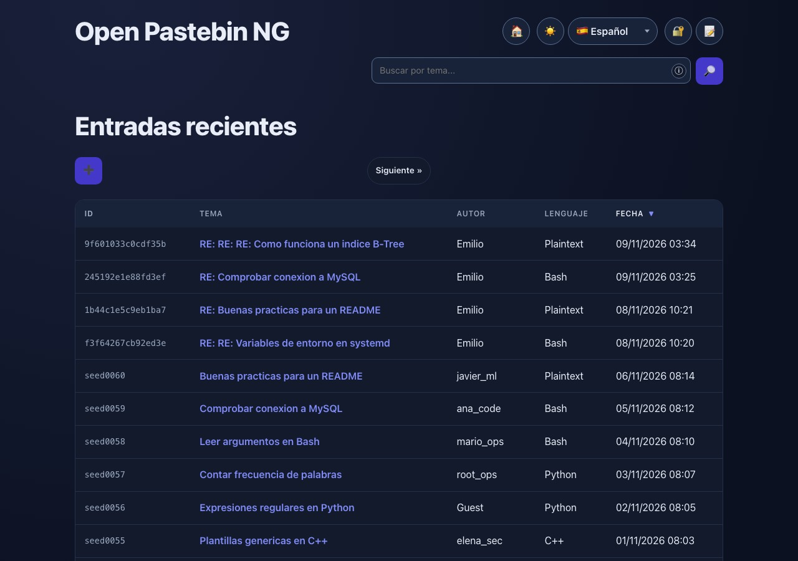
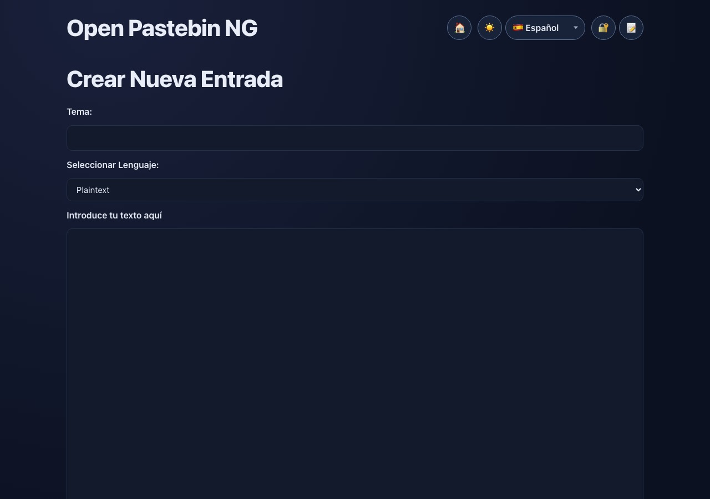
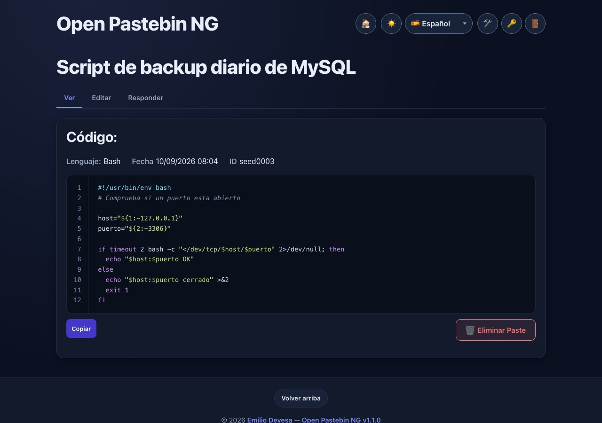
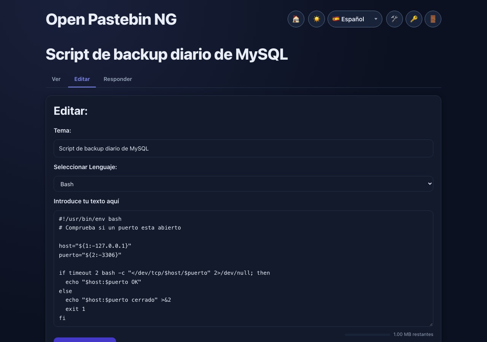
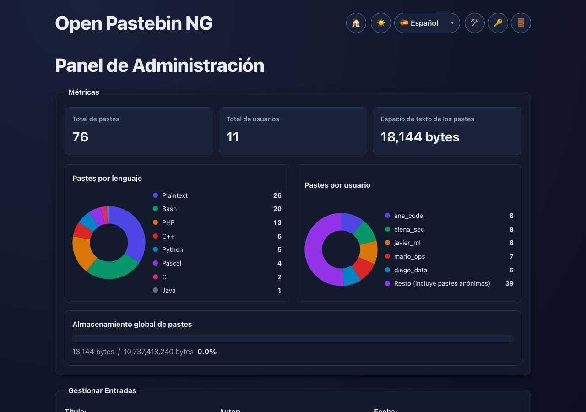

Local syntax highlighting
PHP, Ruby, Bash, Python, Pascal, Java, C and C++ highlighted in the browser. Line numbers, one-click copy and accessible feedback.
v1.1.0 · Stable release
Open Pastebin NG is a lightweight, self-hosted pastebin for teams and individuals. Syntax highlighting, threaded replies, roles, an audit log and backups — all in plain PHP and MySQL.

Features
No frameworks, no external fonts, no CDN. Just a fast PHP application you can run on a small VPS or shared hosting.
PHP, Ruby, Bash, Python, Pascal, Java, C and C++ highlighted in the browser. Line numbers, one-click copy and accessible feedback.
Real reply threads with a History tab: chronological entries, an ancestor/current/descendant badge and a branch graph that works without JavaScript.
Admin, registered user and guest access. Self-service password changes, session invalidation, rate limits and CSRF protection.
Compact action cards and centred confirmation dialogs for destructive actions. Metrics, storage progress and a collapsible audit log.
Download a bounded SQL dump from the admin panel or CLI. Restore it explicitly into any database, with password reauthentication on every download.
English, Spanish, German, French, Portuguese and Chinese catalogs, with server-rendered translations that work without JavaScript.
A persisted theme toggle, responsive tables and reduced-motion support. No web fonts and no layout shift.
A global paste-text quota with a progress chart in Metrics, plus near-quota warnings before new pastes are rejected.
Screenshots
All screenshots show the current release with the bundled Spanish locale and dark theme.




Quick start
Choose the classic shared-hosting package or the Apple Container deployment. Both use the same schema and configuration file.
git clone https://github.com/emilio-devesa/opng.git
cd opng
cp src/config.example.php src/config.php
# Edit src/config.php with your database credentials
php src/install.php
php -S 127.0.0.1:8080 -t srccp deploy/apple-container/.env.example deploy/apple-container/.env
# Set the database password and application secrets
bash deploy/apple-container/start.sh --build
# Open http://127.0.0.1:8080Documentation
The repository ships complete guides for installation, upgrades, backups and security hardening.
CLI installer, phpMyAdmin fallback, web-server configuration and upgrades without Composer.
Back up first, then migrate from 0.9.x or 1.0.x with the versioned schema migrations.
Bounded SQL dumps from the admin panel or CLI, explicit restore targets and audit entries.
Supported versions, deployment checklist, destructive-action safeguards and reporting.
Private network, read-only app container, MariaDB volume and backup volume.
Every release, including the v1.1.0 admin-panel workflow and documentation updates.
Clone the repository, read the installation guide and keep your data on infrastructure you control.